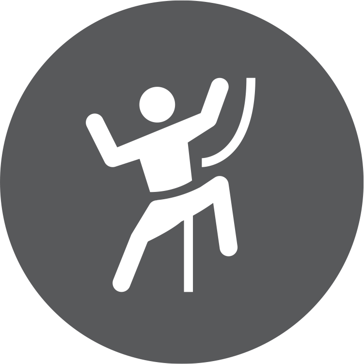

<html>
<!-- 本人水平零蛋，能跑起来纯属意外，对一切状况概不负责 -->
<!-- 主要使用高德API：https://lbs.amap.com/api/subway-api/subway-summary -->
<!-- Open Repo in https://github.com/paptigshiyf/RockerMetro -->
<head>
    <meta charset="utf-8">
    <meta content="width=device-width, initial-scale=1.0, maximum-scale=1.0, minimum-scale=1.0,shrink-to-fit=no"
        name="viewport" />
    <title>

        RockerMetro
    </title>
    </meta>
</head>

<body>
    <div id="mysubway">
    </div>
    <script src="https://webapi.amap.com/subway?v=1.0&key=e93456fa0164b2018d86c91d39528fa9&callback=cbk">
    </script>
    <style type="text/css">
        .tip_out {
            position: relative;
        }

        .tip {
            position: absolute;
            background: rgba(0, 0, 0, 0.7);
            width: 120px;
            left: -60px;
            bottom: 0;
        }

        .tip_name {

            padding: 10px 0;
            text-align: center;
            font-size: 16px;
            color: #fff;
            border-radius: 4px;
        }

        .tip_content {
            padding: 10px 0;
            text-align: center;
            font-size: 18px;
            color: #fff;
            border-radius: 4px;
        }

        .tip .tip_start,
        .tip .tip_end {
            float: left;
        }

        .tip_footer {
            height: 10px;
            background: url() center top no-repeat;
            background-size: 21px 10px;
        }
    </style>
    <script type="text/javascript">

        window.cbk = function () {
            window.mySubway = subway("mysubway", { easy: 1, adcode: 3100 });
            var markerStationList = {
                "通河新村": "攀岩工厂",
                "汶水路": "Hive Five",
                "人民广场": "新世界天宇",
                "莲花路": "尽峰Acme",
                "莘庄": "登拓",
                "南京东路": "魔岩",
                "龙阳路站": "岩立方，dyno park",
                "金科路": "vfour",
                "虹口足球场": "小树SHU，啸Roaring",
                "中潭路": "Neverest",
                "延安西路": "Dome"
            };
            window.markerStationList = markerStationList
            function OnStationClicked(ev, info) {
                var id = info.id;
                if (markerStationList.hasOwnProperty(info.name)) {
                    mySubway.addInfoWindow(id, {
                        isCustom: true,
                        content: GetStationContent(info.name)
                    });
                    var center = mySubway.getStCenter(id);
                    mySubway.setCenter(center);
                }
                else {
                    mySubway.clearInfoWindow();
                }
            }

            function OnStationClickedByName(name) {
                if (markerStationList.hasOwnProperty(name)) {
                    mySubway.addInfoWindow(name, {
                        isCustom: true,
                        content: GetStationContent(name)
                    });
                    var center = mySubway.getStCenter(mySubway.getIdByName(name));
                    mySubway.setCenter(center);
                }
                else {
                    mySubway.clearInfoWindow();
                }
            }
            window.OnStationClickedByName = OnStationClickedByName

            function GetStationContent(name) {
                var str = `<div class="tip_out"><div class="tip"><div class="tip_name">`;
                str += name;
                str += `<div class="tip_content">`;
                str += markerStationList[name];
                str += `</div">`;
                str += `</div><div class="tip_footer"></div></div>`;
                return str;
            }

            mySubway.event.on("subway.complete", function () {
                for (station in markerStationList) {
                    mySubway.addMarker(station, {
                        width: 0,
                        height: 0,
                        offset: {
                            x: -13,
                            y: -13
                        },
                        cnt: `<div></div>`
                    });
                }
            })


            mySubway.event.on('station.touch', OnStationClicked)
            mySubway.event.on('stationName.touch', OnStationClicked)
        };

    </script>
</body>

</html>